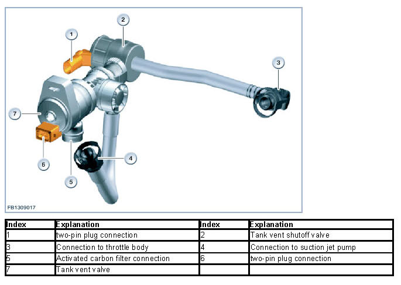
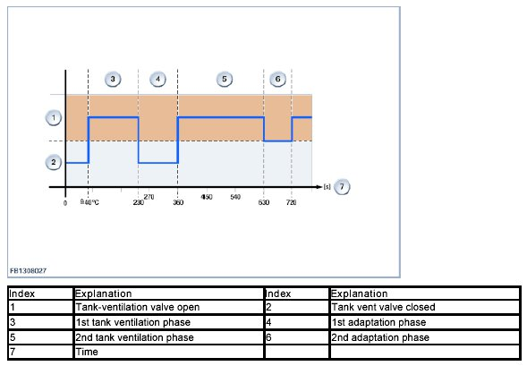
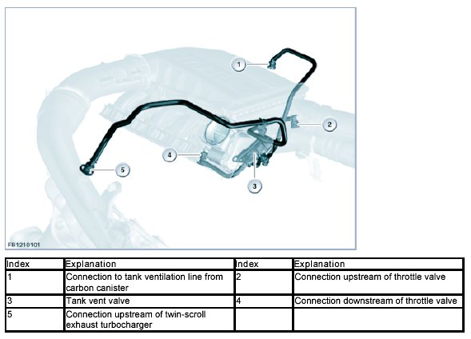
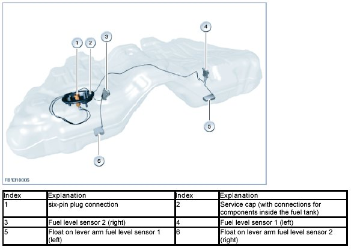
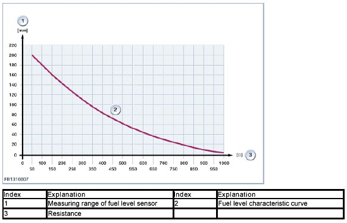
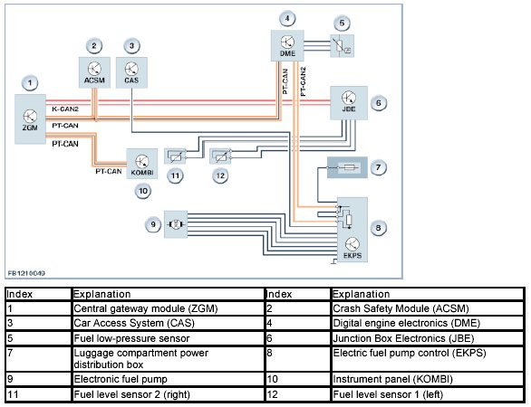
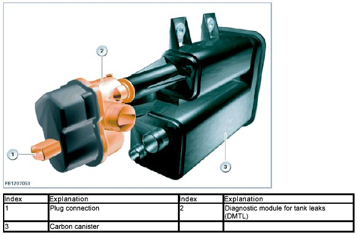
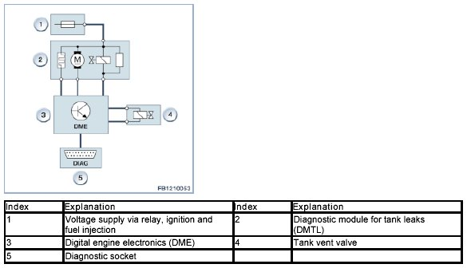

Fuel Tank
Fuel Tank
Fuel tank
The fuel tank of the N55 engine is equipped with different components.
Brief component description
The following components are described for the fuel tank:
- Tank vent shutoff valve
- Tank vent valve
- Fuel level sensor 1 (left) and fuel level sensor 2 (right).
Tank vent shutoff valve
The tank vent shutoff valve is necessary for a diagnosis of the tank ventilation system.
The N55 engine has two purge air lines from the tank vent valve to the air intake duct:
1. from the fuel tank ventilation valve via the suction jet pump valve before the twin-scroll exhaust turbocharger
2. from the tank vent valve to the throttle body.
Both lines must therefore be checked for through flow in the event of malfunctions.
When the first purge air line is being checked, the second is closed using the shutoff valve.
The amount of fuel vapor drawn in by the combustion engine from the activated carbon canister must be adapted to each operating condition of the engine. The fuel tank ventilation shutoff valve is activated by the Digital Engine Electronics (DME).

Tank vent valve
The tank ventilation system captures volatile hydrocarbons in the carbon canister. These hydrocarbons are fed to the intake air for combustion. The tank ventilation system prevents hydrocarbons from escaping into the environment.
The creation of volatile hydrocarbons in the fuel tank depends on:
- Fuel temperature and ambient temperature
- Air pressure
- Fill level in the fuel tank
- Time.
If the pressure and temperature remain the same, evaporation decreases over time, as only the volatile hydrocarbons evaporate.
The vacuum in the fuel tank resulting from withdrawal of the fuel is balanced out by the ventilation and venting.
The tank vent valve controls the regeneration of the activated carbon canister by means of scavenging air.
Scavenging air drawn through the activated carbon canister is enriched with hydrocarbons depending on the loading of the activated carbon. The purge air enriched with hydrocarbons is then fed to the N55 engine for combustion.
The tank vent valve is closed when in a de-energized state. This prevents the ingress of fuel vapor from the activated carbon canister into the intake pipe when the engine is at a standstill.
The amount of fuel vapor drawn in by the combustion engine from the activated carbon canister must be adapted to each operating condition of the engine. To achieve this, the tank-ventilation valve is activated by the Digital Engine Electronics (DME) by means of a pulse-width modulated signal with fixed or variable frequency.
With the engine off and after the engine start, the fuel tank ventilation valve remains closed as long as the coolant temperature is still below 40 °C. However, the fuel tank is still ventilated via the activated carbon filter to the ambient air. The fuel vapors that escape here are collected by the carbon canister.
The 1st tank ventilation phase starts as of a coolant temperature of 40 °C. In the 1st tank ventilation phase, the fuel tank ventilation valve is opened for approx. 170 seconds.
In the 1st adaptation phase, the fuel tank ventilation valve is closed. For the 3 load ranges (idle speed, lower load range and medium load range), a fuel mixture adaptation as deviation to Lambda value = 1 is made at certain engine speeds and load ranges.
In the 2nd tank ventilation phase, the fuel tank ventilation valve may be opened for the entire phase (270 seconds), provided no other requests are pending (for example, overrun fuel cutoff or diagnosis).
In the 2nd adaptation phase, the fuel tank ventilation valve is closed again. For the 3 load ranges (idle speed, lower load range and medium load range), a fuel mixture adaptation as deviation to Lambda value = 1 is made at certain situations for load and engine speed. All other adaptations run in exactly the same way.

The fuel vapors are cached in a carbon canister and fed to combustion.
The following graphic shows the tank ventilation system on the F10.

Fuel level sensor 1 (left) and fuel level sensor 2 (right)
2 fuel level sensors are installed in the fuel tank, one in each half of the tank.
The fuel tank level is determined by the fuel level sensors and displayed on the instrument panel (KOMBI).
1 fuel level sensor consists of the following components:
- Potentiometer with sliding contacts and potentiometer tracks
- Lever arm
- Float.
Only fuel level sensor 2 (right) can be replaced. Fuel level sensor 2 (right) is installed in the right half of the fuel tank.
The fuel gauge in the instrument panel (KOMBI) displays the fuel tank level as of terminal 15 ON.
The Junction Box Electronics (JBE) provide the two fuel level sensors with electrical power. The junction box electronics (JBE) determine a resistance value via the voltage drop at the potentiometers (depending on the filling level) and transmit this to the instrument panel (KOMBI). The fuel tank level is determined in liters in the instrument panel (KOMBI) via a characteristic curve.
The joint of the fuel level sensors contains a potentiometer with sliding contacts and potentiometer tracks. The position of the float and therefore the lever arm changes depending on the fuel tank level. This means that a certain resistance value can be assigned to each angle.
The following graphic shows the fuel level sensors on the F10.

The measuring range of the fuel level sensor from approx. 0 to 200 millimeters corresponds to, for example in a possible encoding variant, 75 liters (total fuel tank capacity, for example 82 liters).

System overview

Notes for Service department
National-market version for US
Diagnostic module for tank leaks (DMTL)

The leak test of the fuel system is run regularly after stopping the engine. The following processes will thereby run during the after-running period of the DME as long as the necessary start conditions have been met:
- Initial situation
During normal engine operation, the changeover valve in the diagnosis module is in the position "Regeneration". Fuel vapors are stored in the carbon canister and fed into the engine depending on the actuation of the tank vent valve (fuel tank ventilation").
- Checking start conditions
The necessary start conditions are checked after the engine is switched off:
- Engine off
- Battery voltage between 11.5 and 14.5 Volts
- No fault memory entries in the Digital Engine Electronics (DME) regarding the diagnostic module for tank leaks (DMTL) as well as the tank ventilation system
- Tank fill level greater than 15 % and less than 85 %
- Ambient temperature between 4.5 °C and 35.3 °C
With a positive result, the tank leak diagnosis is started with a comparison measurement.
- Comparison measurement
The tank vent valve is permanently closed after the engine is switched off. The changeover valve of the diagnosis module remains in the position "Regeneration". The electric leak diagnosis pump impels fresh air from the surrounding area through a defined leak of 0.5 mm diameter. The power consumption needed for this is stored as a value. The actual tank leak diagnosis then follows.
- Tank leak diagnosis
The tank vent valve remains closed. The changeover valve of the diagnosis module switches to the position "Diagnosis". The leak diagnosis pump pumps fresh air from the environment into the fuel tank, slowly raising the internal pressure. At the start of the tank leak diagnosis, the internal pressure corresponds to the ambient pressure. This is why power consumption is low. As the pressure inside the fuel tank increases, the power consumption also increases. The Digital Engine Electronics (DME) evaluate the power consumption of the leak diagnosis pump.
- Evaluation of the power consumptions
Digital Engine Electronics (DME) evaluate the rise in the power consumption within a certain time. If the power consumption exceeds the value stored within this time, the fuel system is considered to be OK. Tank leak diagnosis is ended. If the power consumption does not reach the value stored, the fuel system is considered to be defective.
Tank leak diagnosis allows a difference to be made between:
- Micro-leak, leakage less than 0.5 millimeters
- Minor leak, leakage greater than 0.5 millimeters
The relevant fault is entered in the fault memory of the Digital Engine Electronics (DME). Tank leak diagnosis is then terminated.
- End of the tank-leak diagnosis
The changeover valve is switched back to the position "Regeneration". The after-running period of the Digital Engine Electronics (DME) is available for other functions.
The tank leak diagnosis can also be started using the diagnostic system. In this case, the processes also take place as described above.

General notes
NOTICE: Allow the engine to cool down.
Never start repair work on the fuel system without allowing the engine to cool down first. The coolant temperature must not exceed 40 °C. Compliance with this instruction is absolutely vital, as otherwise residual pressure within the high-pressure fuel system could result in uncontrolled fuel spray.
NOTICE: Protect ignition coils against contamination.
When carrying out repair work on the N55 always ensure that the ignition coils are not contaminated by fuel. Contact with fuel substantially reduces the ability of silicone to provide effective sealing. The result would be arcing between the spark plugs and the cylinder head, leading to ignition miss. Prior to working on the fuel system always remove the spark plugs and seal off the spark plug wells with shop towels to protect them from fuel.
We can assume no liability for printing errors or inaccuracies in this document and reserve the right to introduce technical modifications at any time.